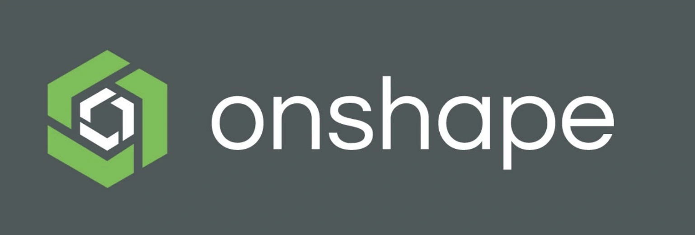
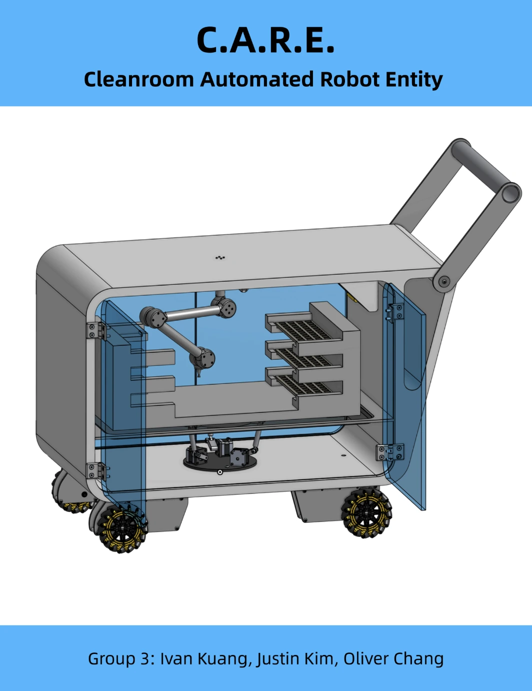
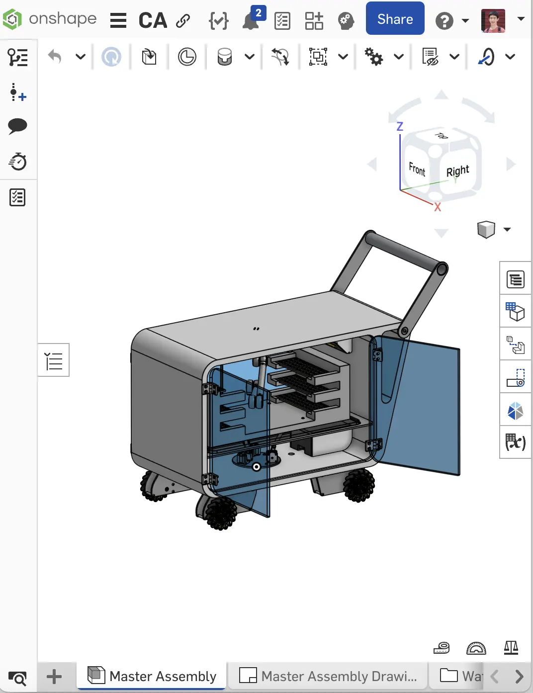
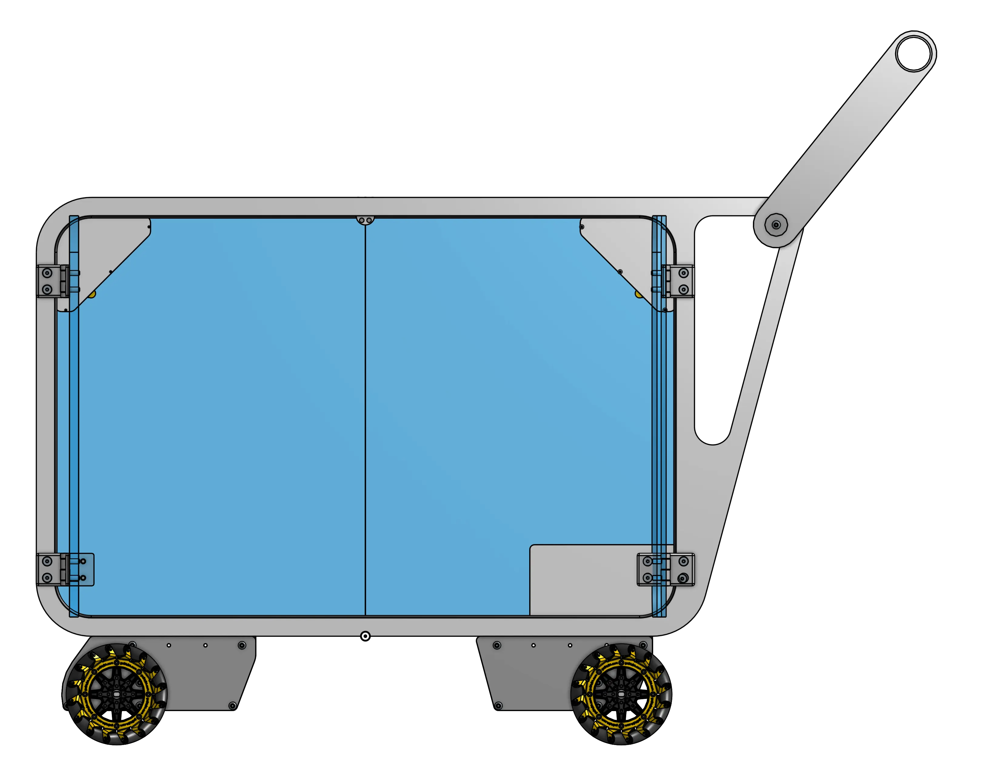
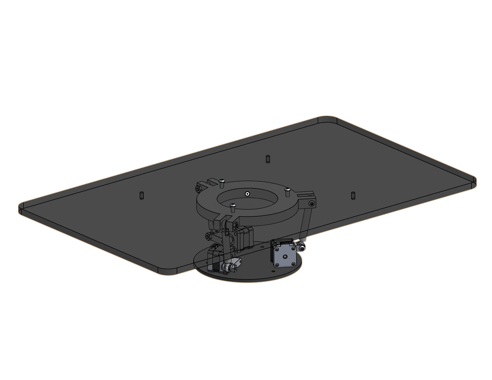
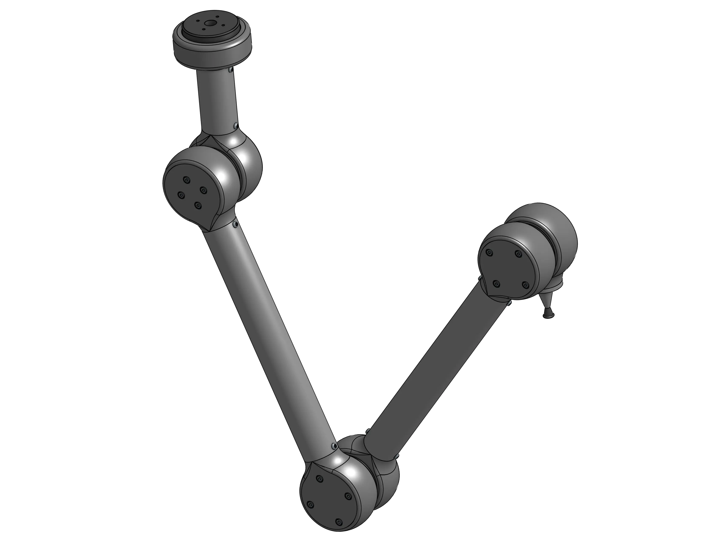

CART & Drive System
Enclosed and sealed cart enabling a sterile interior.
C.A.R.E, shorthand for Cleanroom Automated Robot Entity, is our team's solution to this year's CADathon run by Berkeley's ASME. This year's prompmt challenged teams to come up with a sterile transportation method chips and wafer manufacturing plants, with a priority on automation and decisions to ensure sterilization.
SKILLS
3D Design
TOOLS

TEAM
Ivan K.
Justin K.


Over the course of this 12 hour event, we spent the first hour brainstorming solutions to the challenge. From aerial delivery methods to a hot-wheels track style transport method interwoven among the lab, our final design of a hybrid cart design allows for both human and autonomous control.
Our design would allow for strafing to move in tight spaces via mecanum drive, stablization regardless of incline, as well as autonomous movement with a robot arm.
Enclosed and sealed cart enabling a sterile interior.


Inspired by ball-balancing robots accounts for yaw, pitch, and roll axis compensation.
Suction powered arm with three joints reaching every corner of the cart.

Judged by industry experts and ASME alumni, we won 1st place among all competitors this year! Our team had a great experience at the event and a lot of fun bringing our brainstorming sketches to cad within the span of just a single day.